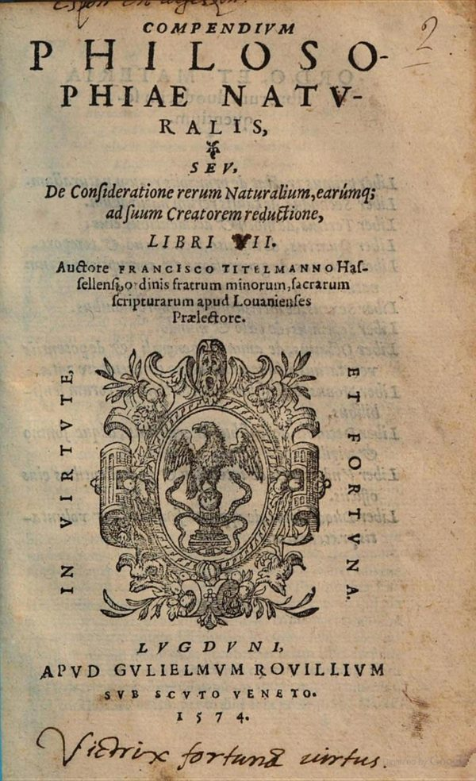
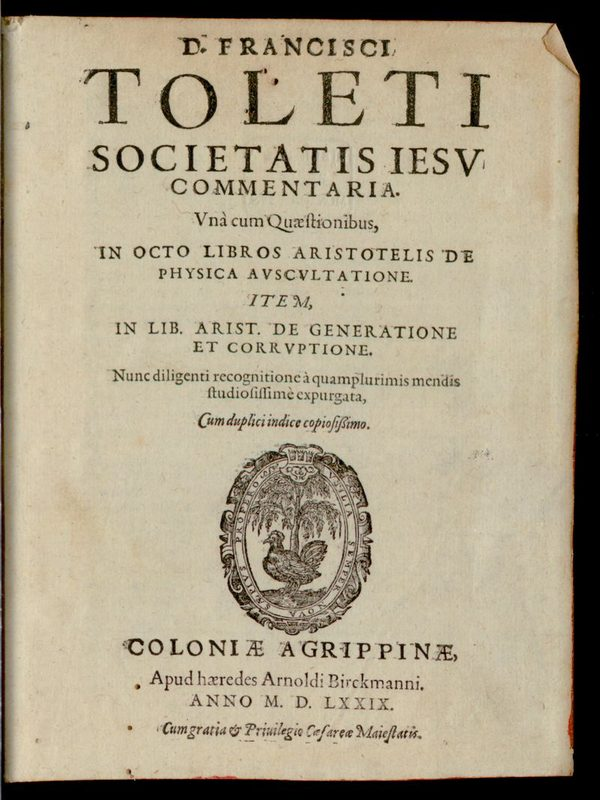

c.1575
Courses printed 1560–1590
Texts chosen. Reading has not begun.
Natural philosophy is still Aristotle’s, taught as commentary and compendium. The topics will come from the books themselves; François Titelmans’s twelve books run from principles, causes and motion through generation, meteors and the heavens to the soul, the senses, the intellect and the will.

FranceFrançois Titelmans, Compendium philosophiae naturalis, Lyon 1574 
Protestant German landsPhilipp Melanchthon, Initia doctrinae physicae, Wittenberg 1575 
Catholic German landsFrancisco de Toledo SJ, Commentaria in octo libros Aristotelis de physica, Cologne 1579 
In place of the British IslesDomingo de Soto OP, Super octo libros Physicorum, Salamanca 1582. No natural philosophy course was printed twice in Britain in these years.